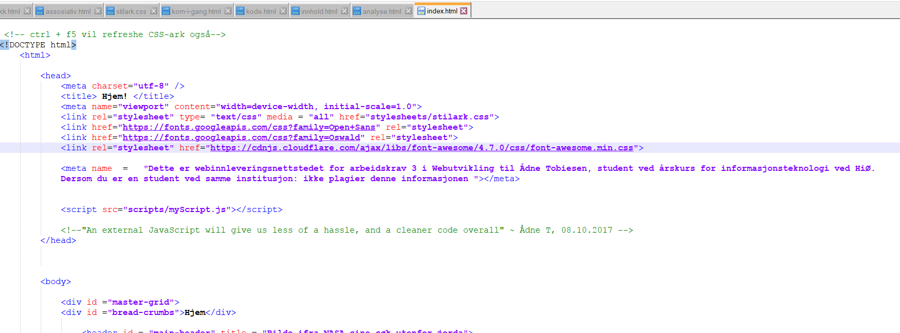

Tiltak som har blitt gjort på denne siden
Generell koding
Både siden og CSS-filen er validerte. Tittel - både i head og tittelen i seg selv - er forskjellige ifra side til side, og er i all hensikt inkludert. Meta har også blitt inkludert på forsiden, som anvist i bildet nedenfor.
{kind=link}
Semantisk korrekte tagger
Navigasjonsmenyene er innkapslet i hver sine nav-tagger, headerne i header-tags, seksjonene i seksjonstagger, artikkel i article-tags osv. Dette vil hjelpe søkemotorene i å sette siden inn i en kontekst.
Tilgjengelighet for mobiler og nettbrett
På mobilsiden fjernes både navigasjonsmeny og sidemeny ved skjermbredder lavere enn 800px. På skjermstørrelser mellom 800 og 1000, settes artikkelbredden lik 100%, og side-bar flyttes ned. I stedet for navisasjonsmeny kommer der en egen mobilmeny. Knappene på denne er bred, med en stor skrift og rikelig med padding. Siden forandres også ifra å være bred til å være lang, noe vi kan se ved at navigasjonsmeny er på bunnen, at artiklene tar opp en større bredde, og at footer tar opp en større bredde enn tidligere. I forhold til skrift vil denne tilpasses skjermstørrelsen på enheten vi bruker, ved inludering av font-size: calc(1em + 1vw) . em (Ingen forkortelse) er her standardstørrelse for HTML-skrift som da er 16, mens vw er bredden på skjermen.
Alt attribute og title
Alle bildene, med unntak av bilder som ikke er lagd av meg, har logiske filnavn. f.eks "skjermdump-av-tiltak-meta-og-head.png" istedet for "pic123456789(1).png". På bildene er det også inkludert en alt attributt. Dette bidrar bl.a til at søkemotoren kan indeksere dette. Videoen i iframe vil på den annen side ha en title-tag siden alt-attributen ikke kan benyttes. Det går per idag ikke ann å ha en iframe som et barn av en lenketag, så iframe forsvinner på mindre skjermer, og får en beskrivelse som kompensasjon Navnene på disse taggene har også blitt fyllt ut på en mest mulig logisk måte.
Innhold
Alle artikler på siden har en egen ingress, med både bilde, overskrift og en les mer. Dette har samtidig blitt formulert til å være så lite "click-bait" som mulig.